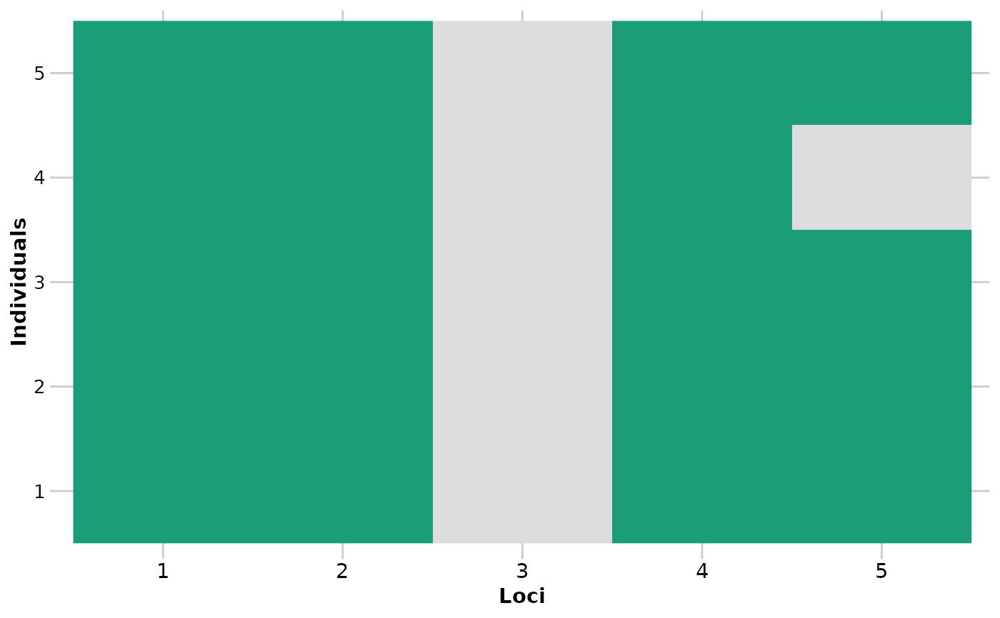
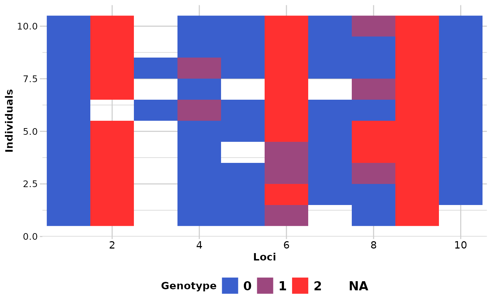
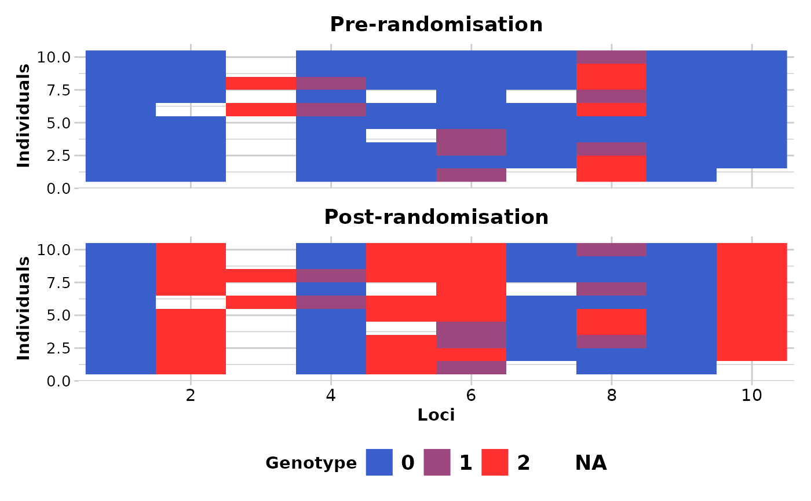

Randomly changes the allocation of 0's and 2's in a genlight object
Source:R/gl.random.snp.r
gl.random.snp.RdThis function samples randomly half of the SNPs and re-codes, in the sampled SNP's, 0's by 2's.
Arguments
- x
Name of the genlight object containing the SNP data [required].
- plot.out
Specify if a plot is to be produced [default TRUE].
- save2tmp
If TRUE, saves any ggplots to the session temporary directory (tempdir) [default FALSE].
- verbose
Verbosity: 0, silent or fatal errors; 1, begin and end; 2, progress log ; 3, progress and results summary; 5, full report [default NULL, unless specified using gl.set.verbosity].
Details
DArT calls the most common allele as the reference allele. In a genlight object, homozygous for the reference allele are coded with a '0' and homozygous for the alternative allele are coded with a '2'. This causes some distortions in visuals from time to time.
If plot.out = TRUE, two smear plots (pre-randomisation and post-randomisation) are presented using a random subset of individuals (10) and loci (100) to provide an overview of the changes.
Resultant ggplots are saved to the session's temporary directory.
Author
Custodian: Luis Mijangos – Post to https://groups.google.com/d/forum/dartr
Examples
require("dartR.data")
res <- gl.random.snp(platypus.gl[1:5,1:5],verbose = 5)
#> Starting gl.random.snp
#> [dartR vers. 2.9.7 Build = Jackson ]
#> Processing genlight object with SNP data
#> Warning: data include loci that are scored NA across all individuals.
#> Consider filtering using gl <- gl.filter.allna(gl)
#> The loci that were changed are: 1, 4
#>



#> Completed: gl.random.snp
#>